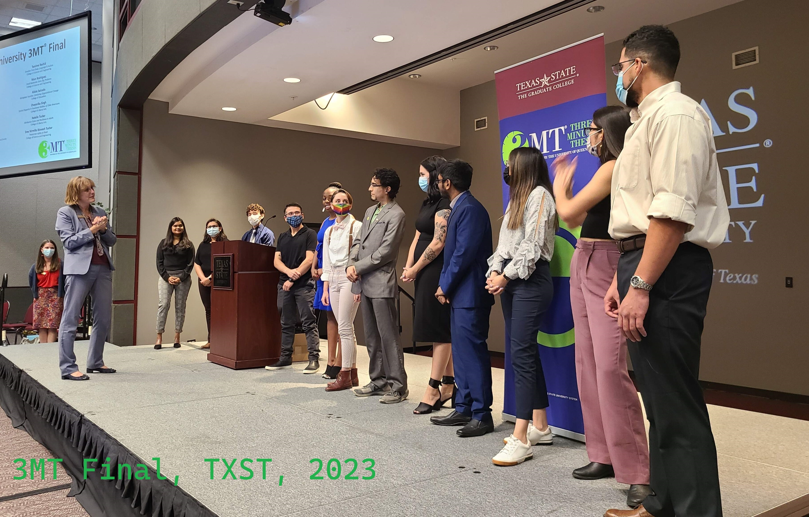

Research Interest
I am doing my PhD research on neuromorphic computing at the University of Tennessee Knoxville. In my MS, I have worked on predicting the depth of the pedestrain using monocular camera. I am fascinated by all recent invention and technology. All my published works are here and projects are here

"“The coming era of Artificial Intelligence will not be the era of war, but be the era of deep compassion, non-violence, and love.”"
Amit Ray, Pioneer of Compassionate AI Movement